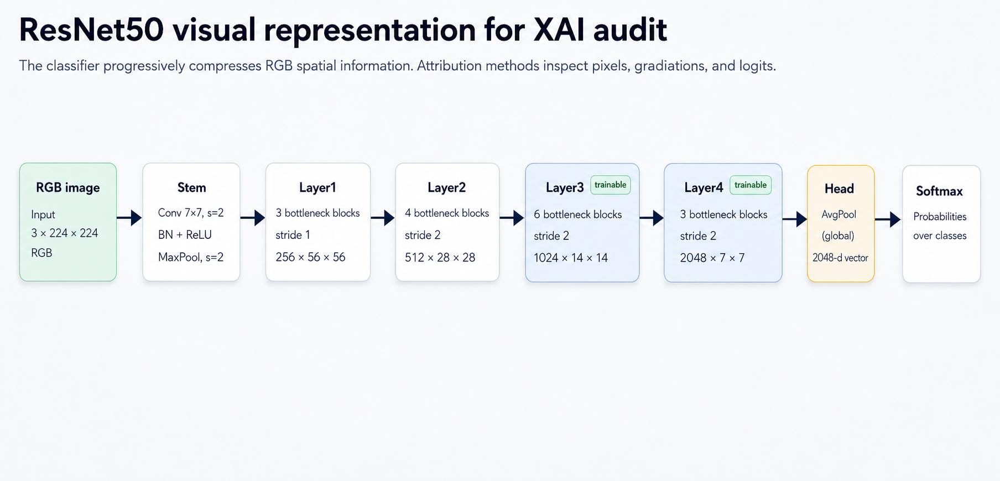

Question 1
Where is evidence located? Grad-CAM and Integrated Gradients produce spatial maps for a selected class.
A heatmap can look persuasive without being reliable. This report tests whether local saliency maps and concept-level explanations provide evidence that survives controlled checks.

Deep Learning Project · University of Trieste · Alina Fogar, Emma Dariol, Elisabeth Imbalzano · 22/07/2026
The project follows one image from prediction to explanation, intervention, error analysis and semantic interpretation.
Each stage answers a stronger question. Spatial attribution proposes where evidence may be located; controlled tests determine whether that proposal is stable and faithful; concept methods then examine whether the representation can be related to human-readable attributes.
Where is evidence located? Grad-CAM and Integrated Gradients produce spatial maps for a selected class.
Is the map stable and faithful? Perturbations and quantitative metrics test whether the highlighted evidence survives controlled checks.
Which semantic concepts are represented? AwA2 attributes and TCAV connect activation directions to concepts such as stripes, horns, fur and flippers.
Can prediction be mediated by concepts? A Concept Bottleneck Model forces the class prediction through an explicit semantic vector.
The explained model is a standard ResNet50.
We start from an ImageNet-pretrained ResNet50 and adapt it to the animal classes in our dataset. This transfer-learning setup preserves broadly useful visual features while specialising the model for our classification task.

CrossEntropyLoss compares class logits with the ground-truth label. AdamW updates trainable
parameters with weight decay.

| Component | Configuration used in the maintained run |
|---|---|
| Dataset interface | Manifest-based AwA2 subset, 20 visible classes, class counts between 174 and 200 images. |
| Baseline classifier | ImageNet-pretrained ResNet50, final classifier replaced for the manifest classes, trainable
modules layer4 and fc. |
| Baseline optimization | CrossEntropyLoss, AdamW, learning rate 1e-4, weight decay
1e-4, batch size 32, maximum 5 epochs, early stopping
patience 3, seed 42.
|
| Preprocessing | Training uses RandomResizedCrop(224, scale=(0.75, 1.0)),
RandomHorizontalFlip(0.5) and ImageNet normalization. Validation and test use
Resize(256), CenterCrop(224) and ImageNet normalization.
|
| CBM training | ResNet50 backbone initialized from the AwA2 baseline checkpoint, 20 selected AwA2 concepts,
dropout 0.15, batch size 16, AdamW with learning rate and weight decay
1e-4, 5 epochs, concept and class loss weights both 1.0.
|
Grad-CAM and Integrated Gradients locate candidate evidence for one image and one selected class.
A saliency map is the numerical attribution tensor.
A heatmap is its colour-coded visualization over
the
image.
A spatial map answers where attribution is concentrated.
Stability, necessity and sufficiency are evaluated later through perturbation, deletion and insertion tests.


A plausible map becomes useful only when its highlighted evidence survives interventions and controls the selected class score.
The analysis first changes the approximate background, then quantifies map stability and faithfulness, and finally applies the same logic to misclassified images.
Add random noise only outside the approximate animal mask.
Shift background RGB channels while leaving the animal region intact.
Replace the approximate background with controlled random texture.
Track prediction transitions, fixed-target confidence and spatial similarity between saliency maps.

The qualitative pattern is now tied to the available stress-test CSV rather than left as a purely visual
impression. Across the unique perturbed examples in Figure 06, 5 / 12 prediction transitions
ended in walrus. Under background replacement alone, 3 / 4 examples ended in
walrus. In the separate selected-error audit, 4 / 6 perturbed cases also moved
to
walrus, including 2 / 2 under background replacement.
This is still not a full test-set prevalence estimate. It is a quantified case-study hypothesis: the
repeated appearance of walrus under textured background interventions is strong enough to
motivate a systematic scan.


IoU and Spearman measure whether the explanation remains spatially consistent. Deletion and insertion test whether highly ranked pixels actually control the target score. These checks answer different parts of the reliability question and must be interpreted together.
Does the most salient spatial support remain in the same region? Higher overlap indicates more stable localization.
Does the full pixel-importance ordering remain similar? Constant maps are treated as undefined rather than as artificial agreement.
Do salient pixels actually affect the target score? A faithful map should delete evidence quickly and recover it early during insertion.
How much normalized saliency lies on the approximate animal region compared with the background?
Stress test A
The card keeps the same reading order as the original section: summary dashboard, Grad-CAM detail, Integrated Gradients detail and a selected case study.


Stress test B
This card isolates the RGB-channel background intervention while preserving the same figure order and metric semantics.


Stress test C
This card contains the strongest intervention: the approximate animal region is preserved while the background is replaced with controlled random texture.


Misclassifications are useful because they force the explanation to account for a decision that is visibly incorrect.
An attribution for the predicted class asks which evidence increased the score the network actually chose. An attribution for the true class asks a different question: which regions would need to support the correct class more strongly?


Misclassification reading
In Figures 15a and 15b, each row shows the same image explained twice. The wrong-target map explains the class actually predicted by the model. The true-target map explains the ground-truth class.
The predicted class is supported by contextual evidence. This is the clearest shortcut pattern: the model finds support for the wrong class outside the animal.
Both classes compete on similar object evidence. The error is more consistent with morphology, pose, texture or visually similar body structure.
The model sees the animal, but the animal features activate the wrong class more strongly than the true class. The heatmap can look plausible while supporting a false decision.
A heatmap centered on the animal is not automatically a correct explanation. It may faithfully describe what increases the wrong class score. This separates visual plausibility from faithfulness and from ground-truth alignment.

wrong − true logit margin shows which class gained relative evidence.

The failure is not only that saliency maps may move to the background. A deeper failure is that they may faithfully explain a false model decision. A wrong-target map can be faithful to the model score and still be semantically misleading because it assigns animal evidence to the wrong class.
For this reason, visual inspection is insufficient.
AwA2 attributes let the analysis move beyond unnamed pixels and ask whether the ResNet50 representation contains human-readable semantic structure.

The current run uses 20 repeated CAV fits per evaluated pair, held-out validation, matched random directions, confidence intervals, permutation tests and Benjamini–Hochberg correction. Seven of 49 evaluated pairs remain significant at corrected alpha 0.05. Unexpected pairs are kept visible so they can be audited in the heatmap and effect-size views.


The bottleneck experiment asks whether prediction can be mediated by named attributes instead of explained only after the fact.


The current CBM reaches approximately 0.799, compared with 0.857 for the
ResNet50 baseline.
Binary concept accuracy is approximately 0.754. Concept quality varies substantially
across
attributes.
Changing a predicted concept tests how that semantic variable affects the CBM class head.
CBM concept contributions explain the CBM pathway: ResNet50 backbone, concept head and class head. They are a semantic comparator, not an explanation of the separate end-to-end ResNet50 baseline used for local attribution maps.


AwA2 attributes are class-level rather than image-specific. Every image from one class receives the same target concept vector, even when an attribute is occluded or not visible.
| Method | Evidence type | Main reported numbers | Conservative reading |
|---|---|---|---|
| Grad-CAM | Local, activation-level saliency | Background-swap stress: mean top-20 IoU 0.503, mean Spearman 0.595.
Advanced audit: deletion AUC 0.136, insertion AUC 0.383, animal-saliency
ratio 0.774. |
Often spatially coherent, but constrained by the late 7 x 7 representation and not
sufficient as causal proof. |
| Integrated Gradients | Local, input-level attribution | Background-swap stress: mean top-20 IoU 0.338, mean Spearman 0.405.
Advanced audit: deletion AUC 0.085, insertion AUC 0.269. Blurred versus
black baseline agreement: IoU 0.198, Spearman 0.215. |
More pixel-level and more baseline-sensitive. It is mathematically principled, but the visual map can be noisy and difficult to interpret causally. |
| TCAV | Concept-level directional sensitivity | 49 class-concept tests, 7 significant after held-out CAV validation,
random-CAV controls and corrected significance. Examples include polar bear/flippers, humpback
whale/flippers, antelope/hooves and dolphin/flippers. |
Useful for semantic probing of the representation. A significant concept direction is not proof that the concept is visually pure or causally necessary. |
| Concept Bottleneck Model | Concept-mediated prediction | CBM test accuracy 0.799, direct ResNet baseline accuracy 0.857, concept
binary accuracy 0.754, CBM/baseline agreement 0.728 on
596 evaluated test images.
|
The bottleneck creates an inspectable semantic interface, but it trades off accuracy and inherits limitations from class-level concept supervision. |
The report shows that local heatmaps, perturbation metrics, error margins and concept-level checks expose different failure modes of the same visual classifier.
The report is intentionally conservative: every result is interpreted only at the level supported by the experiment that produced it.
The maintained experiments use a 20-class AwA2 subset. Extending the same audit to all AwA2 classes would test whether the findings generalize beyond the current subset.
AwA2 does not provide perfect image-level animal masks in this pipeline. Background interventions rely on approximate separation, so the stress test should be read as a diagnostic rather than as a perfect causal isolation of the animal.
The observed walrus pattern is now quantified on the selected panels, but a rigorous claim requires a
full test-set scan reporting how often each perturbation changes the top-1 class to walrus
and which image properties predict that transition.
AwA2 attributes are class-level. A concept may be assigned to every image of one class even when the attribute is not visible in a specific photo, limiting image-level causal interpretation.
The most valuable extension is a full-transition audit: run every background perturbation on the full test split, count every original-to-perturbed class transition, and report transition rates with confidence intervals. That would turn the walrus-attractor hypothesis from a case-study observation into a dataset statistic.
| Question | Answer supported by the project |
|---|---|
| 1. Where is evidence located? | Grad-CAM and IG provide different spatial hypotheses for a selected class. |
| 2. Is the map stable and faithful? | Only partially. Background interventions and deletion expose instability, shared evidence and contextual sensitivity. |
| 3. Which concepts are represented? | Validated TCAV identifies measurable semantic sensitivity, subject to concept coverage and random controls. |
| 4. Can concepts mediate prediction? | The CBM creates an explicit concept path, with lower class accuracy and imperfect concept prediction. |
The strongest defensible conclusion remains conservative: saliency maps are useful diagnostic tools, but they should not be presented alone as faithful explanations of a deep visual classifier.